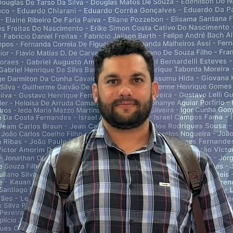
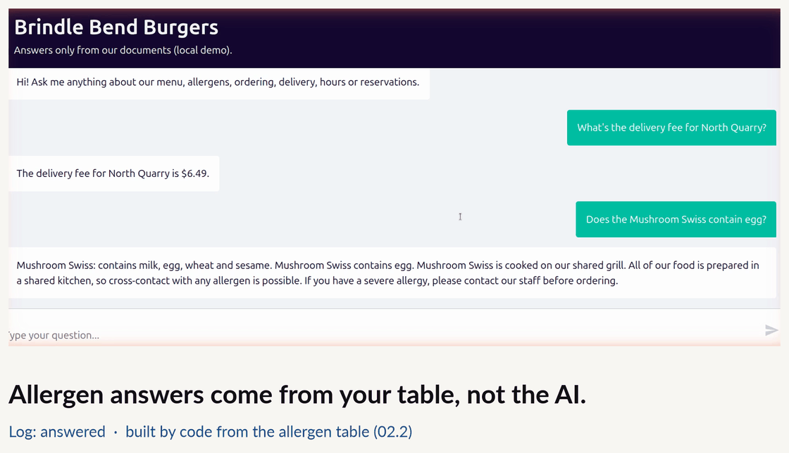
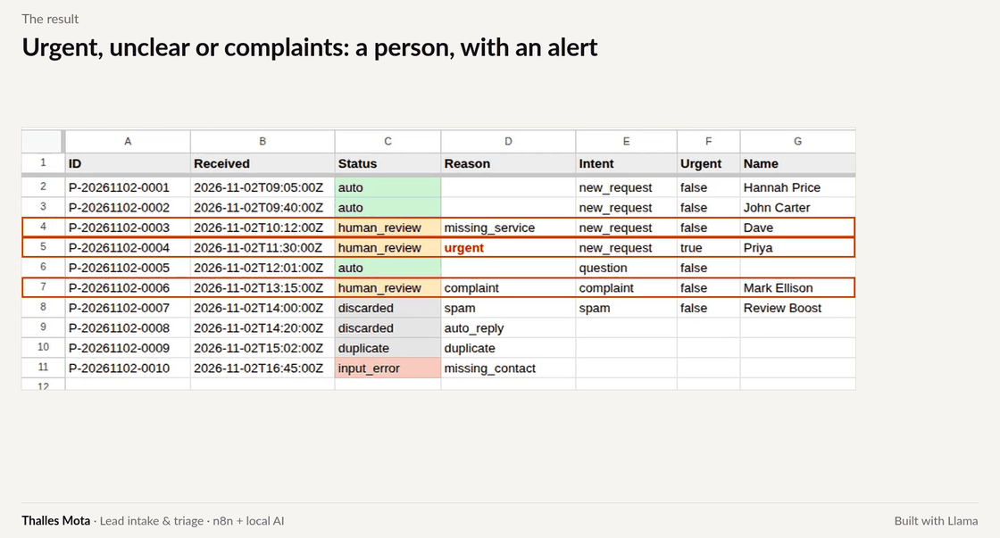
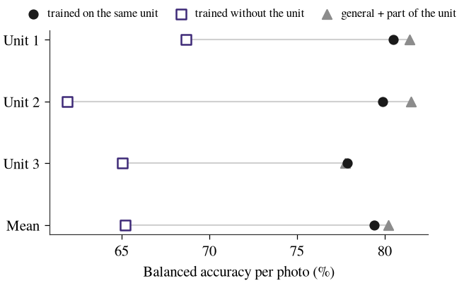

Thalles Paul Leandro Mota
- MSc candidate in Applied Computing (Data Science), UFMT
- 3 papers published in 2026, including BRACIS (Springer)
- Lead creator of BioMS Zaku, open source
I build machine-learning models and AI automations, and I test them where they usually fail: outside the data they were built on. That means another machine, another region, or questions nobody wrote down beforehand. Every project below reports its numbers the same way, measured on data the system had never seen, with the misses stated next to the hits. I am finishing a master’s degree in Applied Computing (Data Science) at the Federal University of Mato Grosso, I hold a specialization in Applied Statistics, and my first degree is in Physical Education, which is how I came to health and body-composition data.
1. Projects
Products for businesses

Support assistant with measured accuracyAI assistant · answers only from the company's documents, says when it doesn't know, and was tested on 187 questions it had never seen.92%right decisions on 184 unseen questions
Lead intake and triage with a local AIAutomation · an n8n workflow that reads incoming messages with a local AI, fills the spreadsheet and alerts the owner when a person is needed.95%of 40 unseen messages routed correctlyResearch
 Machine learning for adolescent mental healthPublic health · three studies published in 2026 (BRACIS, KDMiLe and a state AI congress), validated in states the models never saw.3papers published in 2026
Machine learning for adolescent mental healthPublic health · three studies published in 2026 (BRACIS, KDMiLe and a state AI congress), validated in states the models never saw.3papers published in 2026

Soybean defect classifiers across equipmentComputer vision · how much a soybean defect classifier loses on a machine it has never seen, why, and how much new data fixes it.−14.2points lost on a machine never seen BioMS Zaku: auditing indices and predictive equationsOpen-source software · decomposes bioimpedance indices, predicts redundancy before computing them and audits them against a negative control.246automated tests, open source
BioMS Zaku: auditing indices and predictive equationsOpen-source software · decomposes bioimpedance indices, predicts redundancy before computing them and audits them against a negative control.246automated tests, open source
2. Work with me
I take on projects in AI automation, document-based assistants, machine learning and model evaluation, remotely and in English, Portuguese or Spanish. Each one starts with a short written scope and ends with the numbers measured on data the system has not seen.
For research projects and data analysis in Brazil, see the consulting page (in Portuguese).
3. Publications
- Mota, T. P. L., Gonçalves, L. C. O., Oliveira, A. C. S. and Martins, C. A. (2026). Classifying psychological distress in Brazilian adolescents: a multi-regional machine learning approach. In Intelligent Systems (BRACIS 2026), LNAI 17109, p. 546–560. Springer. doi:10.1007/978-3-032-39904-5_37.
- Mota, T., Garcia, L. A. V. and Martins, C. (2026). Where does hardness come from? An instance hardness analysis of substance-use prediction in Brazilian adolescents. In Anais do XIV KDMiLe, p. 265–272. SBC. doi:10.5753/kdmile.2026.31988.
- Mota, T. P. L. and Martins, C. A. (2026). Machine learning to classify the risk of frequent substance use among adolescents in Brazil’s Center-West (in Portuguese). In Anais do Congresso de Inteligência Artificial de Mato Grosso. doi:10.29327/9786527222910.1448987.
4. Contact
thallesleandromota@gmail.com · LinkedIn · Upwork · BioMS Zaku on GitHub · WhatsApp